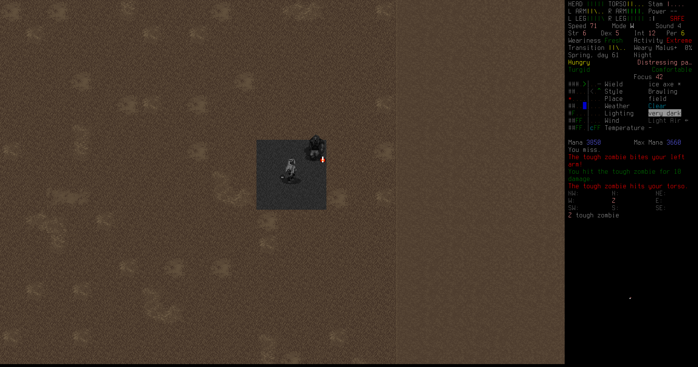
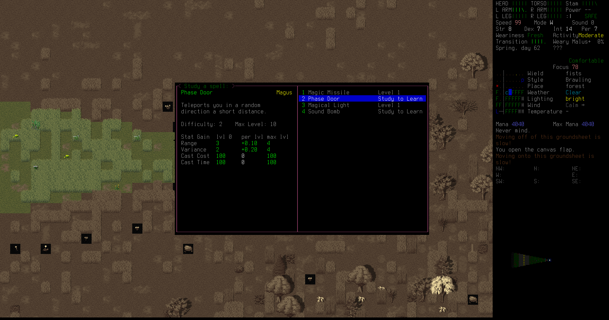

First Night
Raymon needs more supplies. He'd like a map of the area; extra food is good; tools would be useful. It's almost nightfall; he's spent the whole day traveling toward the refugee center, but now he's stuck just outside a city of unknown dimensions. The zombies can't see very far at night, so Raymon plans to raid some of the houses for supplies as soon as nightfall comes. It's time to set up camp.
His camp is barebones, just a tent and a car, but it's better than nothing. The tent ensures no zombies (or aliens, for that matter) can see him.
Raymon learns a new spell, Magical Light. It's not very bright—even reading by it is slower—but there's no downside to learning it and it might come in handy later.
He makes some black coffee with boiled puddle water and his atomic coffee maker.

Then Raymon spends the rest of the day reading, improving his mechanics and tailoring knowledge. Now that he has an SUV, he needs to know how to repair it. Making his own gear will be very handy too. He wants a strap to carry his spear, but he doesn't quite understand how to sew one together, nor does he have the tools. He reads until nightfall. When there's nothing else to do, reading is always a good way to spend time: knowledge is power.

Finally, night falls. Raymon creeps up toward the houses. He can barely see in the dark, but that means that the zombies can't either.

A feral human breaks wielding a pipe breaks out of the house, mumbling something about intruders. Raymon avoids that house.

While sneaking into a garage in another house, something trips the alarm system. A beeping noise pierces the night from somewhere, and Raymon knows that zombies will be stumbling toward his location even now.

Sure enough, here they are. Raymon leaves by the window, letting the zombies break into an empty house.

A zombie like any other, except that its facial features and skull have been devastated. It's unclear what caused the damage, but between the scraps of flesh you can see that its face and brain are gone, though its ears remain intact.
In another house, Raymon spots a brainless zombie with no eyes. It can't see him, but it seems to react to sound, so he stays quiet. He sneaks through the house, looting useful items.
 One of the most useful items he finds is an ice axe. This tool is a decent weapon, in case he drops his spear, and it can be used to pry open doors, windows, and act as a hammer too. It will be handy for the rest of his adventures. He clips it onto his belt for easy access.
One of the most useful items he finds is an ice axe. This tool is a decent weapon, in case he drops his spear, and it can be used to pry open doors, windows, and act as a hammer too. It will be handy for the rest of his adventures. He clips it onto his belt for easy access.

Down in the basement of the house he hits another jackpot. Whoever lived here was a tailor, or a dressmaker, and they had all kinds of fabric and threads and tailor's kits and buttons and fasteners. There's enough material here to last him for a long time in his own makeshift tailoring. He loots as much as he can carry.
He replaces his flashlight with a headlamp he finds in one of the dressers. Every bit of space saved in his sling is space for more loot. The headlamp comes with a high-capacity rechargable battery, but he doesn't have a way to charge batteries yet.
 This was the video that Raymon remembered. That was the moment that he knew the end of the world was here, now. That was when he knew that everyone was going to die. And now he was killing them again.
This was the video that Raymon remembered. That was the moment that he knew the end of the world was here, now. That was when he knew that everyone was going to die. And now he was killing them again.

As Raymon leaves the houses, he's jumped by a huge musclar zombie that comes sprinting out of the gloom. Raymon swings his ice axe, chops into the festering bulk, but the zombie lands a few powerful hits on Raymon's body. He is bleeding and bruised by the time he finally chops through the zombie's head, and his rain coat is torn up.
Making his way painfully back to camp, Raymon patches himself up with bandages and antiseptic from the first aid kit. He needs to get more bandages, he's nearly out from that fight.

But for now, to ignore the pain, Raymon reads more about tailoring and starts to form a plan for making a spear strap. He doesn't want to be caught out in the open without a spear again, but he also doesn't want to have to carry a spear in his hand all the time.
 After a couple hours of study and sewing, Raymon comes up with something good. He ties it onto his back and straps his battered spear in. This will serve.
After a couple hours of study and sewing, Raymon comes up with something good. He ties it onto his back and straps his battered spear in. This will serve.

He falls asleep, and there is morning, the second day.
Second Day
Raymon feels much better after that sleep. He still needs supplies, especially a map, so he decides to hang around this camp a little longer. The first order of business is to craft a new fire-hardened spear to replace his current battered weapon. He shouldn't have tried prying apart a fridge with it. He also needs a better backpack. More bandages would be good too.

An hour and half of work and Raymon sharpens and hardens himself a new spear. It goes straight into his spear strap; it feels solid against his back.
After reading a bit about mechanics, Raymon jury rigs a household battery charger into his SUV's electrical system. It's not very fast, certainly not as efficient as the recharging station he has in the trunk, but it's a lot easier to set up and can keep his headlamp juiced up.

To spend the rest of the day, Raymon decides to learn some more magic. The next spell he learns is Phase Door, which teleports him a short distance. This could be very useful as an escape, or even to break in to places.

Raymon starts inside the tent. The world seems to waver around him, and suddenly...

...He's outside the tent! This will take a little time for him to get used to it, but there's no doubt that it will save his life at some point.
The final spell is Sound Bomb, which creates a loud noise at a location of his choosing. He can't choose a location very far, for now, but later, after much practice, when he can make a noise several dozen meters away, it will become a very useful distraction.
Second Night
As night falls, Raymon sneaks up toward the town and starts hitting the houses for loot again.

Zombies flood these houses on the edge of town, smashing through windows at Raymon's approach. He kites one back to the sand pit.
Running to gain distance, then thrusting with his new sturdy spear deals with that zombie; its blood soaks into the sand.
 Raymon replaces his tattered raincoat with a sturdy trenchcoat. Not only does it provide good protection, it also has huge pockets. Pockets mean everything in the apocalypse.
Raymon replaces his tattered raincoat with a sturdy trenchcoat. Not only does it provide good protection, it also has huge pockets. Pockets mean everything in the apocalypse.
In what will become a common scene, Raymon pops a few aspirin pills to deal with the aching pain of being gnawed on by zombies.
He spots a backpack leaning against a wall in one basement, but the place is filled with strange meat cocoons and zombies. He quickly retreats up the stairs and leaves.

Despite it being the size of a small dog, you can tell this is a very young spider. Its red color is why you gave it this name; you have never seen this creature before the Cataclysm. It is quick, and its large fangs drip with venom.
Raymon stumbles across this horrifying thing in the dark, and just as quickly flees into one of the nearby houses, shutting the window after him.
In a bedroom of the house he fled into, Raymon finds one of the best possible backpacks. This monster backpack can hold nearly 80 liters, and is fairly comfortable too. This will serve as his main pack for the forseeable future.

Some papers in a mailbox deliver more record of the cataclysm that's destroyed the world. Raymon glances over them in the thin darkness. They're just depressing, but he can't turn away.
Inside one of the houses Raymon gets cornered by two zombies. He didn't play this right, and didn't run when he should have. Now there's nowhere to run. He takes several hits as he runs out of the house, and gets nearly run down before he can reach a drain pipe hanging down from the roof.

Bruised and bleeding, Raymon climbs up to the roof of the house as the zombies stumble and slam into the walls below. He stays there for a while, catching his breath, thinking about how close he came to dying.

Finally Raymon climbs down, managing not to hurt himself more in the process. He keeps on looting, despite the brush with death. Something's made him braver recently, but he doesn't know what.

In one basement there's a pile of human bodies and huge cockroach carcasses. They seem to have fought to the death down here. Raymon picks his way through the refuse to claim his prize.
Raymon finds a gun! It's not a very powerful pistol, but it's lightweight and fits in his pocket, and he found plenty of extra ammunation with it too, in the backpack of the dead woman he pulled the gun from. She must have been zombified before fighting the cockroaches, or he would have heard shots. Either way, this is another tool in his arsenal to increase his chances of survival.
In a basement office, Raymon finds a stack of newspaper articles recounting events just before the end of the world. Raymon remembers the China-blaming fever, but that all seems trite now. The canning article seems the most relevant to his situation. Maybe he'll get to the point where canning food makes sense again instead of scavenging whatever is left in people's abandoned homes.
Raymon jumps a fence to escape a huge muscular zombie, but he knows he can't outrun it; he can feel his breath giving and his heart pounds in his chest.
He kites the tough zombie a little way and takes stabs with his spear until it collapses, bleeding out. Another victory.

Back at camp, makeshift bandages staunch his own bleeding. Then it's off to the city again, for another round of night raiding.
As Raymon pries open the back door in another house, it triggers their security system. He knows that dozens of zombies are now stumbling toward him in the darkness, and runs.

He's almost out of breath when a zombie dog catches up to him. He kills it with his ice axe, but it landed several bites. Raymon doesn't think he can raid any more tonight.
Yeah, he's too injured to keep going. He settles down in his camp and patches up, cleaning and bandaging his wounds.
To spend the time, Raymon reads two books on throwing technique and handgun basics. He figures both'll be good investments, especially now that he has a pistol in his pocket. He churns through headlamp batteries, but his battery charger in the SUV keeps the lights on.
Finally, with the help of some melatonin tablets he looted in the night, he falls asleep snuggling his blanket.
Third Day
When he wakes up, Ramon decides it's time to move on. He's got some good loot here, but the hunting grounds are stretching thin. He needs to find either a way north past the city, or go around and find another way to the refugee center.
A strange fungus-like tower emerges from the ground near some of the houses; he hadn't seen it before because it was so dark.
Raymon's way around the city is blocked by forest and more residential areas. He can't get through here with his SUV; it's time to backtrack again.
He consults his hastily drawn maps and decides the best place to drive cross-country is there, just above the hunting lodge. If there's an opening in the forest, he can drive up toward the refugee center until he hits roads again.
As he drives, he finds a run-down house with some makeshift beds and graffiti littering the walls. There is nothing of value there.
As Raymon comes round a bend in the forest, he finds his path clear in front of him. The couple of nights spent camping by the city are over. The journey to the refugee center begins again.